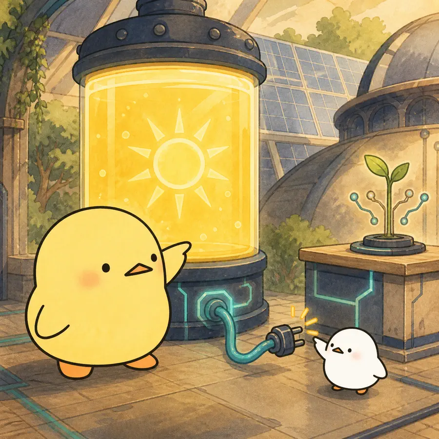
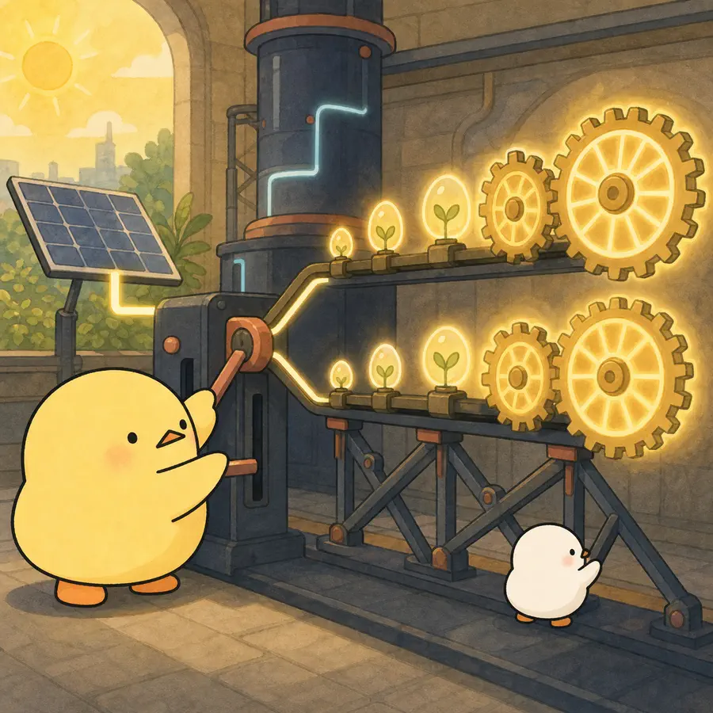
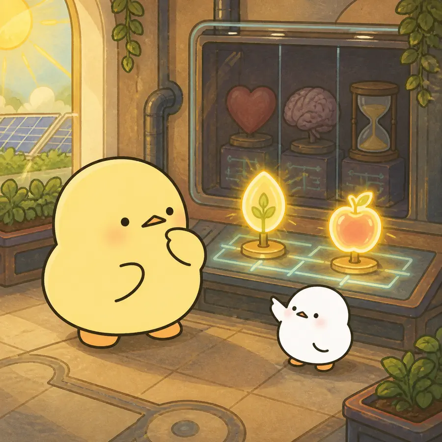

옆으로 넘겨 4컷 보기
-

건강수명은 늘었지만 노년의 기여 잠재력을 활용할 사회제도의 변화가 따라오지 못한 ‘구조적 지체’가 출발점이다.
-
Experience Corps 배정군은 4·12·24개월 모두 생성감 욕구와 생성감 성취의 자기평가가 대조군보다 높았다.
-

ITT는 무작위 배정 전체를 비교했고, CACE는 실제 노출 수준이 높은 순응자를 추정하며 더 큰 효과 양상을 보였다.
-

이 논문이 실험적으로 보인 것은 생성감 욕구와 성취에 대한 자기지각의 향상이다.